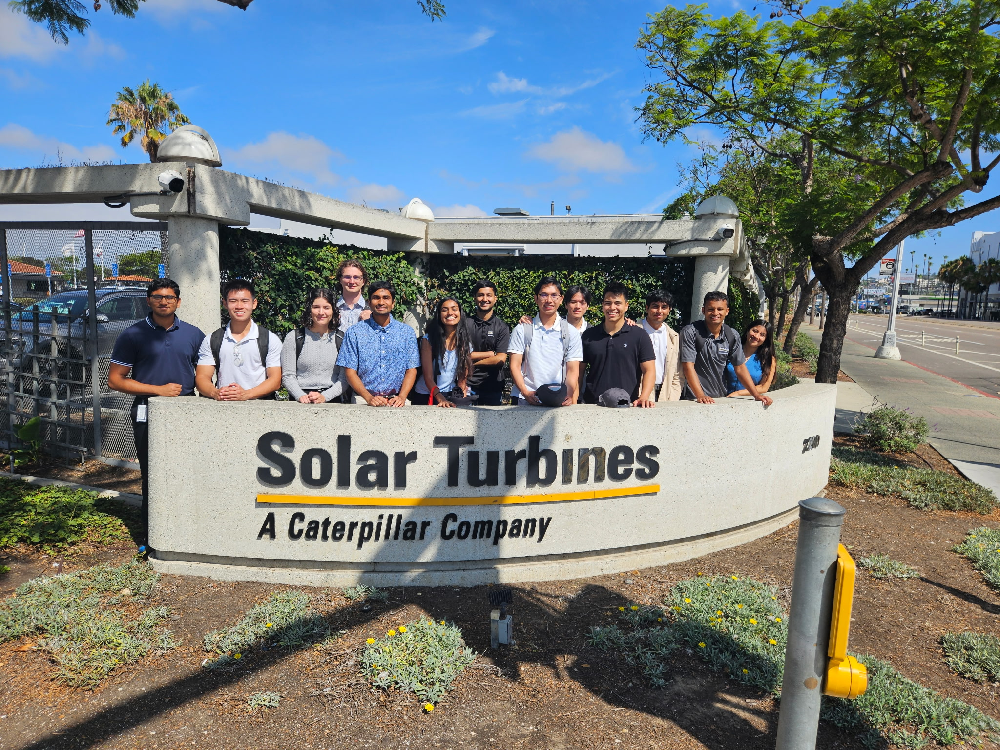

About
My name is Satchin Narasimhan. I was born and raised in San Jose, CA. I have attended UC San Diego for the past 4 years, earning my B.S in Mechanical Engineering.
I became interested in Control Systems during my third year of college when I took an introductory course on LTI systems and basic control theory. I am eager to explore more about Control Theory when I pursue my M.S. in Mechanical Engineering.
Past Experience
My latest experience was an internship at Solar Turbines, a Caterpillar Company. This company designs and manufactures massive gas turbines connected to highly pressurized compressors or power generators used in Power Generation or Oil & Gas applications. I was a Software Test Engineering Intern in the Custom Solutions department. There, I tested the standard and custom software associated with real turbine engine packages planned for Solar's customers. This entailed ensuring the electrical schematic, piping & instrumentation diagram, engine sprecifications, and ladder logic associated with starting, maintaining, and cooling the turbine engine all contained the correct pumps, sensors, actuators, transmitters, and I/O modules. Additionally, I ensured that the Human Machine Interface(HMI) interacted with the projects software properly and looked visually pleasing for the customers.  Overall, this internship was a wonderful experience. I learned about PLC programming and how to read complex ladder logic programs in order to find issues in the software.
UCSD Yonder Deep
As I was a student of UCSD, I joined Yonder Deep, an underwater engineering club to gain experience in designing, prototyping, and integrating sub-assemblies into an Autonomous Underwater Vehicle. For background, Yonder Deep's mission is to create AUVS and USVs(Unmanned Surface Vehicles) to aid oceanographic researchers in gathering data of icebergs in the Arctic for the purposes of climate change study. My first task as a Mechanical member of the club was to redesign the AUVs electronic bed, as it was bulky and difficult to integrate into the AUVs water-tight chamber. With two other engineering students, we brainstormed ideas on how to minimized the amount of support while maintaining structure with our Overall, this internship was a wonderful experience. I learned about PLC programming and how to read complex ladder logic programs in order to find issues in the software.